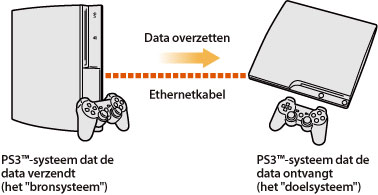
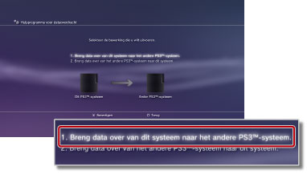
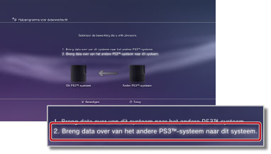

Instellingen > Systeeminstellingen > Hulpprogramma voor dataoverdracht
Hulpprogramma voor dataoverdracht
U kunt nu data overzetten (kopiëren of verplaatsen) die opgeslagen zijn op de harde schijf van een PS3™-systeem naar de harde schijf van een ander PS3™-systeem via een ethernetkabel.

Let op
- Wanneer u deze handeling uitvoert, worden alle data gewist die opgeslagen zijn op het PS3™-systeem dat de data ontvangt (het "doelsysteem").
- Gewiste data kunnen niet worden hersteld; let dus op dat u niet per ongeluk belangrijke data wist. Dataverlies of -beschadiging valt onder de verantwoordelijkheid van de gebruiker.
- Sommige types data kunnen niet worden overgezet. Selecteer hier voor meer informatie.
De systemen klaarmaken voor de dataoverdracht
Voor u de dataoverdracht start, moet u de volgende stappen uitvoeren.
1. |
Update de systeemsoftware van beide PS3™-systemen naar de recentste versie. |
|---|---|
2. |
Maak het PS3™-systeem dat de data zal verzenden klaar (het "bronsysteem"). |
- Maak een PlayStation®Network-account aan als een gebruiker niet over een account beschikt.
- - Selecteer
 (PlayStation®Network) >
(PlayStation®Network) >  (Inschrijven voor PlayStation®Network) en volg de instructies op het scherm om een account aan te maken.
(Inschrijven voor PlayStation®Network) en volg de instructies op het scherm om een account aan te maken. - Deactiveer het PS3™-systeem als de over te zetten data content bevat die werd aangekocht via PlayStation®Store.
- Selecteer (PlayStation®Network) >
 (Accountbeheer) >
(Accountbeheer) >  (Systeemactivatie).
(Systeemactivatie). - Synchroniseer trofee-informatie op het PS3™-systeem met de PlayStation®Network-server als u trofee-informatie wilt overzetten.
- - Meld u aan bij PlayStation®Network en selecteer vervolgens
 (Game) >
(Game) >  (Trofeecollectie).
(Trofeecollectie). - Meld u aan bij
 (PlayStation®Home) voor u de data overzet als u beloningsitems hebt verkregen voor gebruik in (PlayStation®Home) op het bronsysteem.
(PlayStation®Home) voor u de data overzet als u beloningsitems hebt verkregen voor gebruik in (PlayStation®Home) op het bronsysteem. - Maak een back-up van uw profielinformatie en de etappes die u hebt aangemaakt in LittleBigPlanet™ bij uw opgeslagen game. U kunt vervolgens deze data gebruiken bij het spelen van LittleBigPlanet™ op het PS3™-doelsysteem.
Let op
De volgende beperkingen gelden als u de dataoverdracht doorvoert zonder een PlayStation®Network-account aan te maken:
- Mogelijk kunt u de opgeslagen data niet gebruiken op het PS3™-doelsysteem.
- Mogelijk kunt u niet langer trofeeën verdienen met de opgeslagen data die u hebt overgezet.
- Trofee-informatie wordt niet overgezet.
Data overzetten
Schakel beide PS3™-systemen uit en voer vervolgens de volgende stappen uit. Als de overgezette data opgeslagen gamedata zijn waarvoor kopiëren niet is toegestaan of data zijn die beschermd zijn door auteursrechten, worden deze overgezet naar het PS3™-doelsysteem en verwijderd van het PS3™-bronsysteem.
1. |
Maak via een ethernetkabel een rechtstreekse verbinding tussen de twee PS3™-systemen. |
|---|---|
2. |
Sluit de PS3™-systemen aan op verschillende video-ingangen op de tv. |
3. |
Schakel de tv in en schakel vervolgens de PS3™-systemen in. |
4. |
Selecteer |
5. |
Selecteer [1. Breng data over van dit systeem naar het andere PS3™-systeem.].  Als u de eerder beschreven voorbereidingsstappen niet hebt voltooid, volgt u de instructies op het scherm om deze stappen te voltooien. |
6. |
Wanneer het PS3™-systeem klaar is om de dataoverdracht te starten, gebruikt u de afstandsbediening van de tv om de video-ingang te selecteren zodat het scherm wordt weergegeven van het PS3™-doelsysteem. |
7. |
Selecteer |
8. |
Selecteer [2. Breng data over van het andere PS3™-systeem naar dit systeem.]  Volg de instructies op het scherm om de bewerking te voltooien. |
 (Instellingen) >
(Instellingen) >  (Systeeminstellingen) > [Hulpprogramma voor dataoverdracht] op het PS3™-bronsysteem.
(Systeeminstellingen) > [Hulpprogramma voor dataoverdracht] op het PS3™-bronsysteem.Opmerkingen
- Wanneer de dataoverdracht voltooid is, kunt u het PS3™-bronsysteem uitschakelen. Geef het scherm van het PS3™-bronsysteem weer op het scherm van de tv en selecteer vervolgens
 (Gebruikers) >
(Gebruikers) >  (Schakel systeem uit).
(Schakel systeem uit). - Als er als onderdeel van deze handeling content werd overgezet die gedownload werd via PlayStation®Store, moet u het PS3™-doelsysteem activeren voor u deze data kunt gebruiken. Meld u aan op het PS3™-systeem als de gebruiker die eigenaar is van de content, en selecteer vervolgens (PlayStation®Network) > (Accountbeheer) > (Systeemactivatie) om het systeem te activeren.
Beperkingen van het hulpprogramma voor dataoverdracht
Sommige types data kunnen niet worden overgezet met het hulpprogramma voor dataoverdracht. Andere types data kunnen wel worden overgezet, maar kunnen niet worden afgespeeld op het PS3™-doelsysteem.
Surf naar de SCE-website voor uw regio voor de recentste informatie. De volgende types data kunnen niet worden overgezet:
- Videocontent die werd gedownload en gehuurd via PlayStation®Store (bestandstype: MNV)
- Tracks (inclusief "songpacks") voor de SingStar™-software die werden opgeslagen op de harde schijf van het PS3™-systeem
- Videobestanden die beschermd worden door auteursrechten (bestandstypes: MGV en ETS)
- Videobestanden die compatibel zijn met de service DivX® VOD (Video On Demand)
Voor de volgende types data dient u enkele bijkomende stappen uit te voeren na het uitvoeren van de gegevensoverdracht om de data te kunnen gebruiken:
- Toepassingsdata voor Life with PlayStation®
- - Download en installeer de toepassing Life with PlayStation® op het PS3™-doelsysteem. U kunt bijdragepunten voor het PlayStation®Network-rangordesysteem van het Folding@home™-kanaal blijven verzamelen.
- GripShift™
- - Wanneer u de game na de gegevensoverdracht voor het eerst start, wordt een foutmelding weergegeven en kunt u de game niet spelen. Om de game te spelen, dient u deze opnieuw te downloaden en te installeren.
- Opgeslagen data voor Ghostbusters™ en Ghostbusters™: The Video Game
- - De opgeslagen game wordt niet herkend wanneer u de game na de gegevensoverdracht voor het eerst start. Om de opgeslagen data te gebruiken, sluit u de game af en start u deze vervolgens opnieuw.
Opmerking
Het is mogelijk dat bepaalde softwaretitels niet worden verkocht in bepaalde regio's.